HUB TAPES · TREE · COMPANY CHART · 1 OCT
Your notes from this morning, and what changed for each. Everything was checked in a hidden test browser on this Mac (never on your screen), with live prices, from 07:55 to 09:40 ET. The browser opened the real scintillahub.ai address and was handed this branch's page instead of the live one; every other read went to the live services exactly as the page sends it. The browser was not allowed to write anything, anywhere.
1 · THE TWO TAPES
What the strip shows now
- EARNINGS → (was EVENTS →). The left of the strip now carries earnings only, one day at a time, in time order: before the open, then any stated clock time, then after the close, then any report whose time is not announced. Today it reads TODAY · THU OCT 1 · 2 REPORTS · NORMAL · ACN (before the open, 3.29 vs 3.18) · NOW · NKE (after the close), and then, dimmed, the next few names after today.
- It sticks to today. When every report of today has a stored result, or once 20:00 ET has passed (after-hours are over), it rolls to the next day that has reports. The marker then says so: TODAY'S 2 DONE · NEXT THU OCT 8 · 1 REPORT. On a day with no reports at all it opens on the next day that has some.
- ECONOMIC (was a tiny "next"). It's the same queue as before: what qualifies didn't change. Its label is now drawn like EARNINGS, and its text is the tape's 11 px instead of 8 px.
- When three or more releases are due the same day, the space that used to say "N DUE · IN … · GO TO ECONOMIC" now slides. It shows the count for two turns (THU · 10 DUE · HEAVY · IN 15M), then each release in time order for three seconds (name, time, consensus against the prior, e.g. ISM Manufacturing PMI 10:00 · est 55 vs prior 54.6; once it has printed, the actual against the estimate), then the count again. Today's ten take 36 seconds to go round. Tapping a release while it is showing opens that release in ECONOMIC; tapping the count opens the day, as before. I dropped the words "GO TO ECONOMIC" because the label beside it now says ECONOMIC.
- The day marker says how heavy the day is. HEAVY, NORMAL or LIGHT comes from where the day's count sits among the last 60 days that had any. If it's in the top third of those days it's heavy, the bottom third light, otherwise normal. There is no fixed number. Today: 10 economic releases, more than on any of the last 60 release days, so HEAVY. 2 earnings reports for your names is NORMAL. Hover the word for the exact percentage and that history's median. With fewer than 20 days of history it shows no word rather than guessing.
- On a phone (and any window under 900 px) the economic queue used to be hidden altogether. It now rides as a second line under EARNINGS.
Before and after
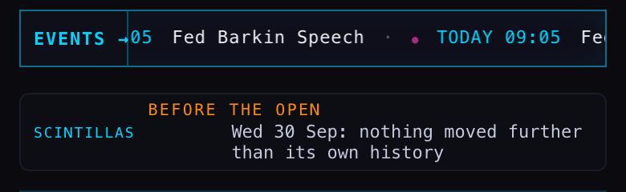
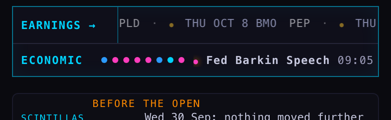
The slide was recorded every 2 seconds for 80 seconds (data in the harness output). The order on screen was the count (6 s), then Jobless Claims 08:30, Fed Barkin 09:05, Fed Collins 09:05, Fed Schmid 09:05, Fed Waller 10:00, ISM Manufacturing Employment 10:00, ISM Manufacturing PMI 10:00, Fed Bowman 15:00, Fed Williams 15:30, Fed Logan 18:45, then the count again. It stayed in step across the minute change.
Where the numbers come from
- Earnings:
earnings_events, the same read the bottom EARNINGS band already makes. HEAVY/NORMAL/LIGHT for earnings: one extra read, once a day, of the last 100 days of reports for the names the Hub tracks (50 days with reports on 1 Oct). - Economic:
econ_calendar, US, under the tape's existing rule (High and Medium, M2, no plumbing). One extra read, once a day, of the last 100 days (1,309 rows, 0.26 s; 68 days with releases on 1 Oct). Nothing is written.
What could be wrong
- "Done" for earnings means a result is stored. If the results writer is late, today stays on the tape until 20:00 ET even though the company has reported.
- The economic history starts on 23 Jun. Until there are 60 earlier days with releases, the comparison is over the days there are (68 today, so it is already 60).
- An item's consensus and prior are the supplier's own. A speech has neither, so it shows just the name and time.
2 · A PATH TO THE TREE MAP
There's a new master tab, TREE, after STATION. It opens the tree map (with the 30 Sep layered navigation) in the same tab, so the grey BACK at its top left comes straight back to the Hub (tested: click TREE → tree map → BACK → the Hub). The studies index (28 Sep) has a new row for it, with a thumbnail of the whole tree zoomed out.
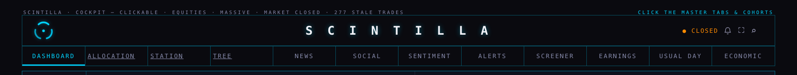
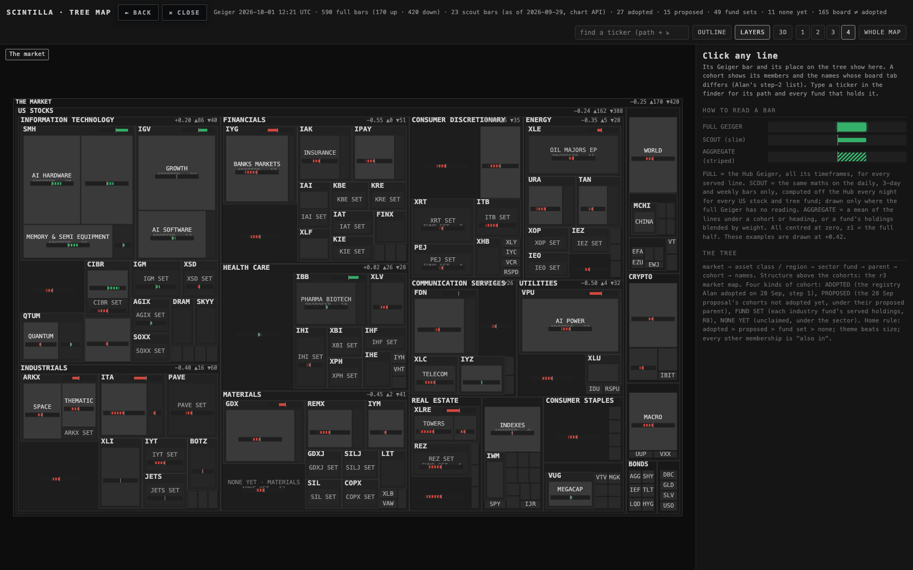
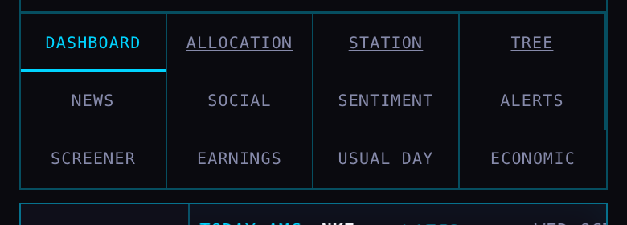
3 · THE COMPANY CHART GETS THE STATION'S FULL TREATMENT
- Five timeframes: 1h · 4h · 1D · 3D · 1W. The row was eleven, and now fits on one line beside CLOUDS and EXPAND, so the chart gets that height back. A browser that remembered one of the six that left opens on 1D.
- The context lens on every timeframe, by the Station's own rule. A 1h or 4h chart gets about three months of daily candles, 1D the last three sessions of 30-minute candles, 3D twelve sessions of 4-hour candles, 1W the last twenty daily candles.
- The Geiger chip and the price badge were there all along but cut off. On a browser's first visit the company view kept an old 29 px tuck meant for the Station's previous toolbar, so the pane's top row (MU 1,057.52 −0.71% and the Geiger chip) sat above the visible area. A later visit in the same tab looked right, which is why this was easy to miss. Fixed.
- Clouds, the pink RSI-only pane and the forming bar (the dashed segment with a ring at the live price) were already there and still are.
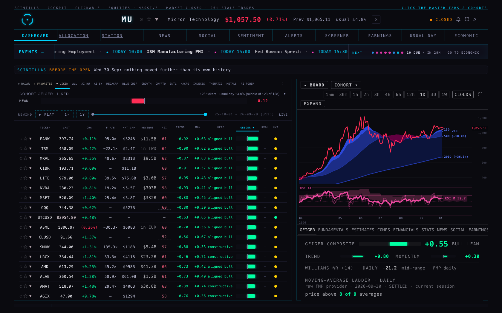
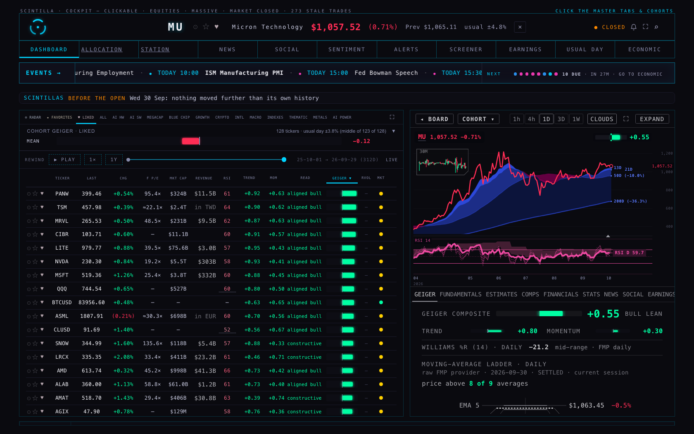
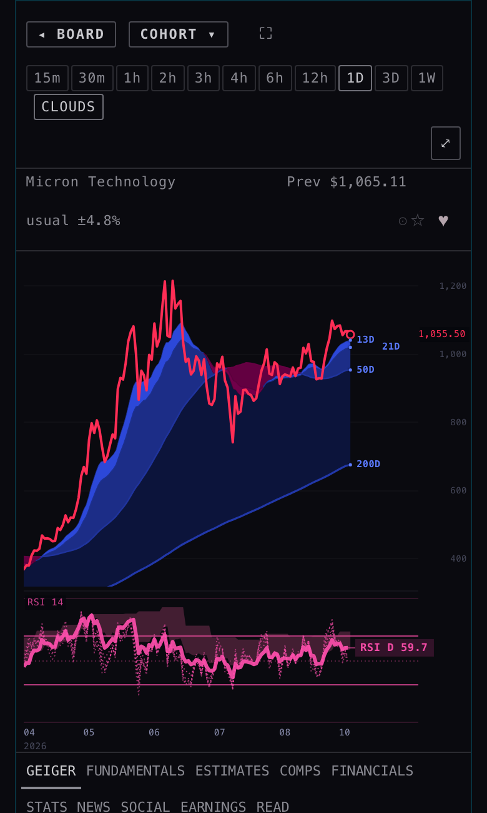
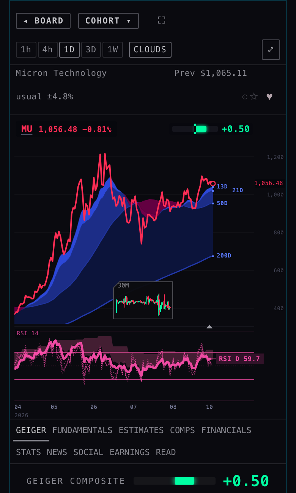
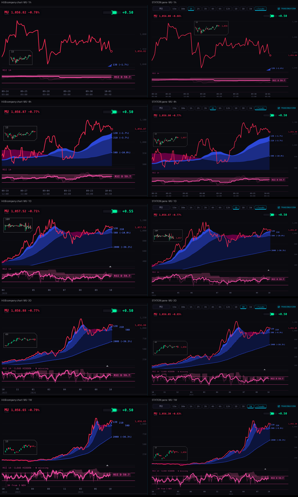
4 · SPEED, NOW THAT THE CHART SERVER'S NEW VERSION IS LIVE
The chart server has run p6-2d67def since 07:45 ET (confirmed from its own /metrics). Its answers now say whether they came from a ready copy (x-hot-read: hit) or were built for that request (miss), so every number below states which it was.
The Hub's board uses the one-request sparklines
Yes. In every run, the board's tile colours went out as /sparklines batches (3 to 8 requests) and no single-symbol tile reads were sent. H2's switch picked the route up by itself.
Click a row at 0 s, 3 s and 15 s after load, in session
Measured in session, 1 Oct 09:32–09:35 ET, on your ALL board (590 names, so the biggest burst), NVDA clicked 0, 3 and 15 seconds after the board appeared. A fresh browser each time; times are from the click.
| build | click at | price on screen | clouds on screen | DATA DELAYED |
|---|---|---|---|---|
| live code (H2's hold), round 1 · round 2 | 0 s | 0.49 · 0.22 s | 0.53 · 0.31 s | never |
| 3 s | 0.29 · 0.26 s | 0.37 · 0.36 s | never | |
| 15 s | 0.32 · 0.37 s | 0.37 · 0.42 s | never | |
| hold removed, aborts kept (test build) | 0 / 3 / 15 s | 0.29–0.61 s | 0.34–0.78 s | never |
| this branch (no hold while /sparklines is in use), round 1 · round 2 | 0 s | 0.40 · 0.30 s | 0.71 · 0.43 s | never |
| 3 s | 0.26 · 0.32 s | 0.35 · 0.38 s | never | |
| 15 s | 0.41 · 0.29 s | 0.61 · 0.34 s | never |
For comparison, on 30 Sep (before the new chart server) a click during the burst waited 1.3–1.7 s per read and showed DATA DELAYED. Now the whole 590-name burst is about 10 requests, and every build answers a click in well under a second. The hold made no consistent difference (the run-to-run spread is bigger than any gap), while it still kept the board's tiles waiting up to 8 seconds after every click. So I dropped it wherever the board is using /sparklines. It stays, unchanged, as the fallback if the chart server ever stops offering that route.
Station: MACRO · WEEK clouds in one read
Each pane used to read its price, and only then its daily bars for the clouds, two steps one after the other. The Station's deck knows the page's six names before any pane loads, so it now asks for all six daily series in one /candles-multi read the moment the page is chosen. Each answer is filed under the same address the pane's own read would use, so the pane finds it there (or waits for it if it's still on its way). The multi answer is field for field the single answer (checked on VIX: every field and all 995 bars equal).
| MACRO · WEEK, all six panes | price on screen | clouds on screen | reads |
|---|---|---|---|
| 30 Sep, before the new chart server (P6 report) | — | 2.7–2.8 s | — |
| 1 Oct live, server cold (12 built, 0 ready) | 0.92 s | 1.14 s | 16 |
| 1 Oct live, server warm (5 runs) | 0.84–0.96 s | 0.89–1.21 s | 15–21 |
| before, the live Station code served locally (6 runs) | 0.43–0.79 s | 0.48–1.01 s · clouds 42–226 ms after the price | 21 |
| after, this branch served locally (6 runs) | 0.52–0.64 s | 0.54–0.64 s · clouds with the price | 16 |
The fair comparison is the last two rows (both served from this Mac, alternated). The clouds now arrive at the same moment as the price, never after it, with five fewer reads. In one earlier after-run the six weekly price reads were themselves cold at the server (0.39–0.56 s each), and price and clouds both landed at 1.16 s. Below 1 second therefore holds whenever the price reads are warm; on a cold server the price itself is now the slower part.
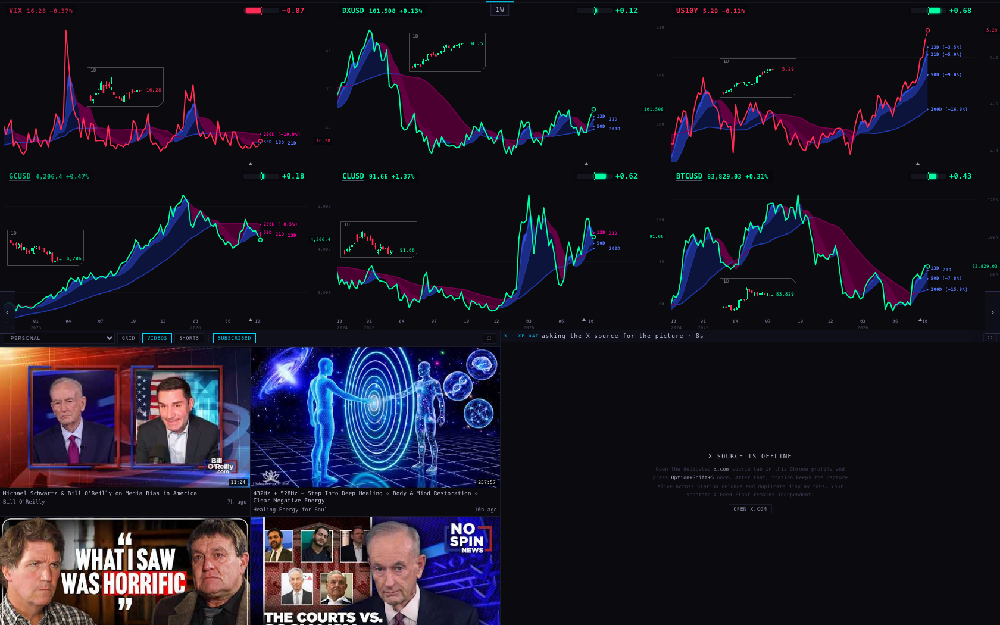
5 · RVOL
On 1 Oct, board_volume holds 193 rows and the newest was written on 6 Jul, so no name on the board had a current reading. Lane P7 is building the writer for all 590 names into the same table.
- The moment a row is current it shows. The table is read on every board pull (every 45 s). The board shows
rvol_at_time: today's volume so far against the usual volume by the same minute over the last 20 sessions, which is what relative volume means mid-session. It falls back tosession_rvolonly where a row has no at-time value. A row counts only for its own session (written within 36 hours). - "No reading yet", not a bare dash. The RVOL cell is 29 px wide (23 px at 1280), too narrow for the words. So each empty cell shows a quiet "…", with the words and the row's date on hover, and the board's own summary line says it once in full: 125 tickers · usual day ±3.8% · RVOL no reading yet. When some names have readings it says RVOL 59 of 125 read.
- Two problems the writer would have hit, fixed now. (1) The five-dot battery is 28 px on its own, so a reading showed as "▮▮0" with the number cut off. On the board the number now stands alone, "0.9×". (2) A name with no row fell back to live volume ÷ average volume, a ratio the code's own note calls about 3.5× inflated intraday. That fallback is gone.
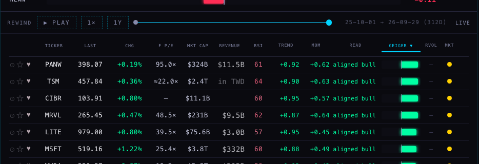
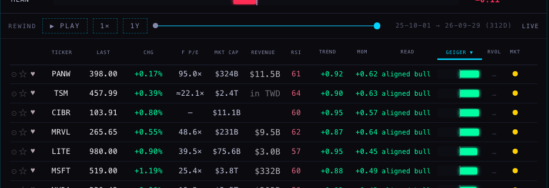
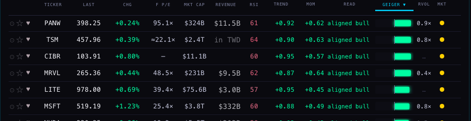
WHAT I DID NOT DO
- Nothing is deployed, pushed or written to any table. I left the TREND, MOM and READ columns alone; they wait on your iconography call.
- I did not batch the Station's price reads, only the clouds as asked. On a cold server those six weekly reads are now the slower part.
- The heavy/normal/light word is on the economic day marker and the earnings day marker. It is not on the bottom bands.
- The Hub's single company chart doesn't use the one-read path; it has only one name.
- The lens's live-price label difference (section 3) wasn't chased.
TESTS
Hub: 1,592 pass, 5 fail, the same 5 that fail on production (listed in the brief's baseline). Station: 878 pass, 18 fail, the same 18 as production. New tests: tests/h3-tape-chart-20261001.test.mjs (Hub, 11) and tests/h3-cloud-batch-20261001.test.mjs (Station, 3). Four older Hub tests that pinned the old timeframe list, the old lens-less address and the old RVOL dash were updated to the new behaviour.